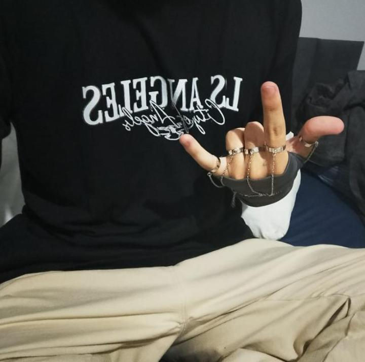

Olá! Meu nome é Nathan.
Sou uma pessoa que gosta de passar o tempo em casa. Meus hobbies favoritos são jogar videogame e dormir. Não sou muito de sair, prefiro ficar no conforto da minha casa.
Minha personalidade varia bastante: às vezes estou cheio de energia e disposto para fazer várias coisas, e em outros momentos fico mais quieto ou desanimado. Mesmo assim, gosto de aproveitar meu tempo fazendo o que gosto e aprendendo coisas novas, principalmente na área da tecnologia e programação.
Este site foi criado para apresentar um pouco sobre quem eu sou e compartilhar um pouco dos meus interesses.